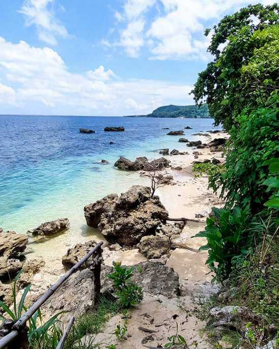

Most traffic on the western Pangasinan coast heads for Hundred Islands in Alaminos or Patar Beach in Bolinao. Bani sits on the road between the two and is easy to drive straight through. Stop, though, and you find small coves hemmed in by coral rock, a hillside Way of the Cross that ends at a cross looking out over the West Philippine Sea, and a farming town that throws a nine-day party for its watermelons.
This guide is for travellers who want that quieter version of Pangasinan. It covers Surip and its coves, the Redeemer's Cross climb, a boat hop to Polipol Island, the Pakwan Festival, how to get there by bus or car, and whether to sleep in Bani or use Bolinao or Alaminos as your base.
Bani's tourism is low-key and mostly run by small resorts and the municipal tourism office. Boat rates, cottage fees and festival dates change from year to year, so treat the details here as a planning guide and check with the Bani Tourism Office's Facebook page before you go.

Bani at a glance
- Where: western Pangasinan, Ilocos Region, between Alaminos City and Bolinao
- Known for: Surip's rocky coves, the Redeemer's Cross and sweet watermelons
- Surip: about 15 km from the town proper, in Barangay Centro Toma on the western shore
- Getting there: Manila buses to Bolinao or Alaminos, then a tricycle or a hired ride
- Festival: Pakwan Festival, usually late January into early February
- Time to give it: one full day, or two with Polipol Island and Bolinao
Surip: Coves, Coral Rock and Clear Water
Surip is the reason most visitors come. It lies in Barangay Centro Toma, about 15 km from the town centre, and the name comes from a local word for "peep", which fits a shore that looks out across the open West Philippine Sea. Don't expect one long beach. The coast breaks into short stretches of pale sand between shelves of dark coral rock, with clear, shallow water that turns deep blue a little way out.
The rock is what makes it good for snorkelling, and the reefs off Surip hold tropical fish and lobster. It also means you should bring reef shoes. Swim where the water is calm and the bottom is sandy, stay off the rock shelves when waves come in, and ask resort staff which spots are safe on the day. Public access to the shore has been free, but the small resorts along the road charge for cottages, day use and parking, each at its own rate.
Climbing to the Redeemer's Cross
Above the beach, a long concrete stairway climbs the hill past the Stations of the Cross to a large white cross on a plateau overlooking the sea. Locals call it the 1,000 steps, and while the real count is lower, the climb is steep and exposed. Go early in the morning or in the last hours before sunset, carry water, and wear proper shoes rather than slippers.
The site is open to the public and draws thousands of pilgrims during Holy Week, when families walk the Stations together and the beach below is just as busy. Outside Lent it is usually quiet, and the view up the coast toward Bolinao is the real reward. Dress modestly on the climb, since it is a place of prayer first.
More to Do in and Around Bani
- Polipol IslandA small island of rock and coral off the Surip coast, popular for swimming, snorkelling and low cliff jumps. Hire a motorboat from Surip or Olanen Beach, or come across from Patar in Bolinao. There are no stores on the island, so bring food and water, and share a boat with a group to split the rental. An environmental fee has been charged per person.
- Olanen BeachAnother shore in Barangay Dacap Sur with a few small resorts. It is a calmer base for an overnight stay and a jump-off point for boats.
- Watermelon countryInland Bani is farm country, with watermelon, rice, corn and salt beds. In the dry months, stalls along the highway sell melons straight from the field, and they are worth stopping for.
- The town churchThe parish church in the town proper is linked to a local story of a saint's statue that kept turning up under a bani tree, which is said to be where the town got its name.
Older lists of Bani attractions also mention caves such as Nalsoc, Baliwangga Falls in Barangay Ranao, and the Bangrin mangrove marine protected area. Access to these varies. The Bangrin mangroves, for example, reopened for residents only. Ask the tourism office before you plan a day around any of them.
The Pakwan Festival
Bani calls itself the watermelon capital of the north, and the Pakwan Festival has celebrated that harvest since 2013. The festival usually runs for about nine days from late January into early February. Recent programmes have included an agri-trade fair, a watermelon carving contest, cook-offs where students and resorts build whole dishes around pakwan, and a street-dancing parade in costumes with a watermelon motif to close the week.
It is a farming town's festival rather than a big tourist event, which is its charm. The plaza fills with stalls and slices of red melon, and rooms in the few local resorts go quickly. If you are planning a winter trip to Pangasinan, it is worth timing a day for it. The town posts the dates and programme each January.
Getting to Bani
- By bus from ManilaVictory Liner and Five Star run buses from Cubao to Bolinao, and the trip takes about six to seven hours. Bolinao-bound buses come up the coast road from Alaminos and pass through Bani, so ask the conductor to drop you in town. Buses to Alaminos are another option, with a short connection onward.
- By carTake NLEX and TPLEX, then head west across Pangasinan to Alaminos and north to Bani. Allow four to five hours from Metro Manila outside holiday traffic. A car makes the scattered beaches far easier to reach.
- Getting aroundTricycles run from the town proper to Surip and the other beaches. Agree on the fare, any waiting time and the ride back before you set off, because empty tricycles are scarce on the coast late in the day.
Where to Stay: Bani, Bolinao or Alaminos
Sleeping in Bani makes sense if you want quiet, a morning swim at Surip and an early climb to the cross. The beach resorts around Surip and Olanen are small and simple, so read recent reviews and book ahead for Holy Week, summer weekends and the Pakwan Festival.
Bolinao has the most rooms, food options and island tours on this coast, and it puts Patar Beach and the lighthouse within easy reach. Alaminos suits travellers pairing Bani with a day on the islands, and our Hundred Islands guide covers the boats and fees there. Bani sits between the two, so you can base yourself in either and day-trip in.
A Two-Day Western Pangasinan Plan
- Day 1Surip and the cross
Climb to the Redeemer's Cross early, then spend the late morning snorkelling the coves below. After lunch, take a boat to Polipol Island while the sea is calm. Stop at a melon stall on the way back to your room.
- Day 2Bolinao or the islands
Drive north to Bolinao for the lighthouse, Patar Beach and a cave swim, or south to Alaminos for a Hundred Islands boat tour. Both work as the last stop before the road back to Manila.
Before You Go
Plan ahead
- Go in the dry monthsNovember to May brings the calmest seas on this west-facing coast. The southwest monsoon later in the year can make Surip rough and cancel boats.
- Pack reef shoes and snorkel gearThe coral rock is sharp, and rentals on the beach are hit and miss.
- Bring cashCottages, boats, tricycles and melon stalls run on cash, so withdraw what you need in Alaminos or Bolinao before you head to the coast.
- Plan around Holy WeekSurip is at its busiest then. Come for the pilgrimage atmosphere, or pick another week for a quiet beach.
Is Bani Worth the Detour?
If you picture Pangasinan as Hundred Islands crowds and busy Patar weekends, Bani is the corrective: small coves, a climb with a view, and a town whose biggest party is about fruit. It works best as part of a western Pangasinan loop rather than a destination on its own, and it suits travellers who would rather snorkel off a rock ledge than sit in a crowded cottage. For more coastlines in this style around the country, our guide to the best beaches by region is a good next read.

Comments
No comments yet. Been here recently? Share a tip or ask a question.
Leave a Reply